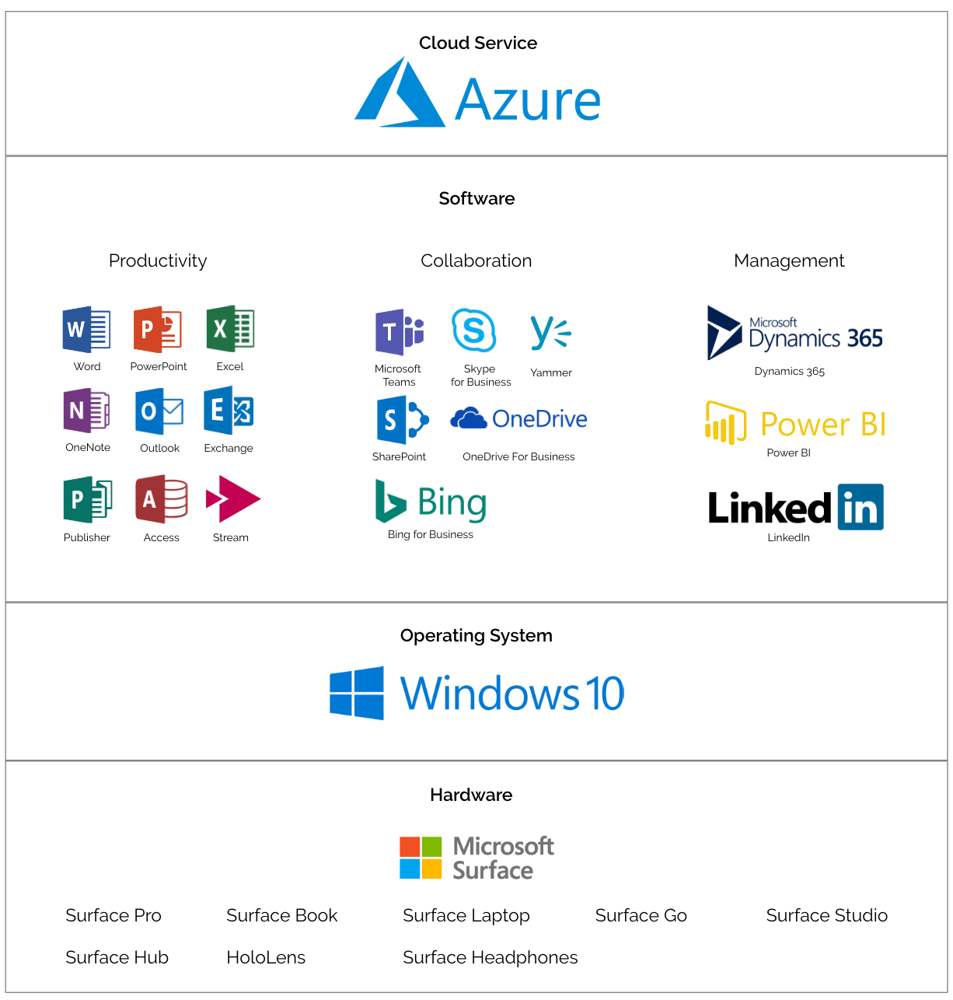
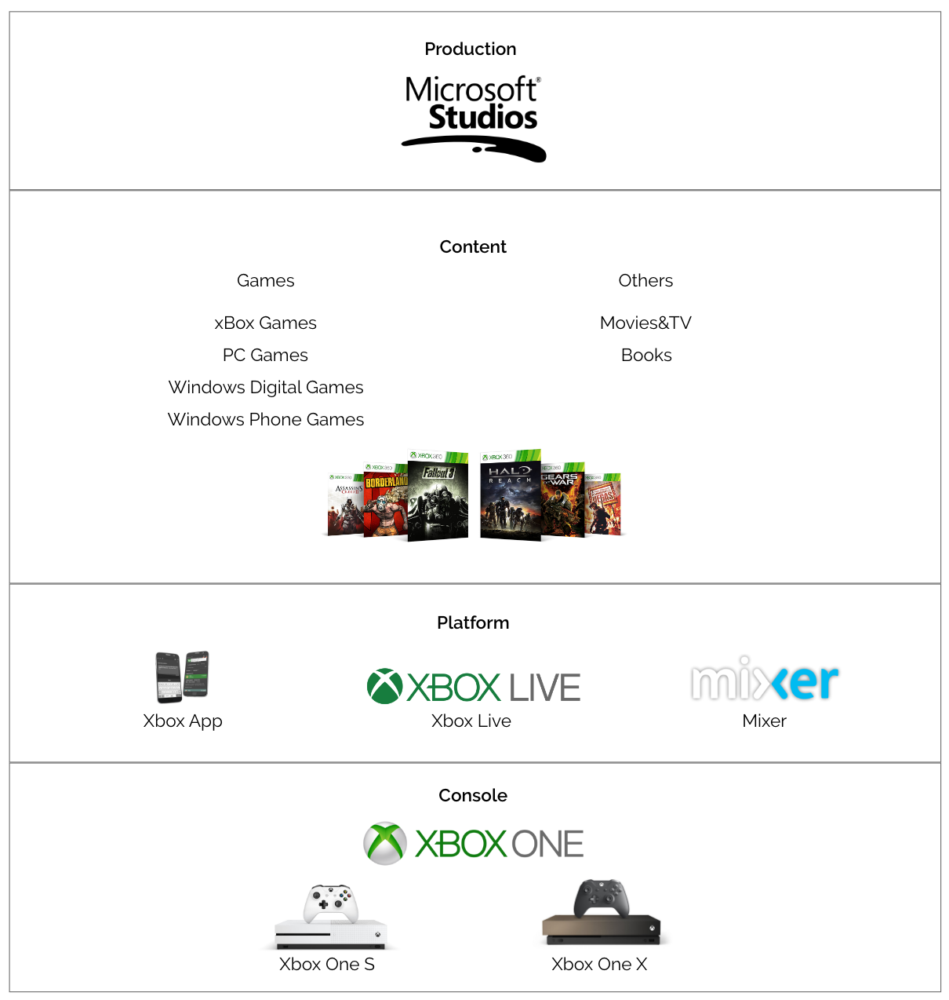

Introduction
In November 2018, Microsoft made itself to the world’s most valuable company. It has overtaken Apple in market cap value for the first time in eight years. What makes Microsoft product great becomes an interesting question to be answered. As I analyzed across different Microsoft products, I categorized them into two major business areas: business technology and gaming. What makes Microsoft successful is never a single product, but its capability to build up products around every crucial scenario within in a big context to satisfy customer needs.
Business Technology
No other company in the world provides such comprehensive business solutions as Microsoft does. Building up business technology ecosystem from hardware and operating system to software and cloud service, Microsoft can empower business from startups to global enterprises.
Software
Microsoft holds strong commercial software business. Every month, more than 135 million people use Office 365 and Outlook Mobile is helping people on more than 100 million iOS and Android devices worldwide. Productivity, collaboration, and management are three major problems faced by every company and Microsoft has corresponding solution to each of it.
Productivity Employee productivity is the backbone of a business. Microsoft is famous for Office products Word, Excel, PowerPoint and OneNote for producing information and increase productivity. Beyond those, Microsoft productivity software also spans from email service and database management system to publishing application and video service. Microsoft provides email service from both client side and server side. Outlook is an email client that also includes a calendar, task manager, contact manager, note taking, journal, and web browsing. Microsoft has Microsoft Exchange, an email server, that provides company more flexibility over management of user email accounts. Microsoft Publisher and Microsoft Access are two PC only productivity software. Publisher is an entry-level desktop publishing application with emphasis on page layout and design. Access is a database management system that combines the relational Microsoft Jet Database Engine with a graphical user interface and software-development tools. Only available in enterprise subscription plans, Microsoft Stream provides corporate video-sharing service. Launched in June 2017, it enables executives to connect and communicate visually with employees around the globe with live streamed company-wide events. Collaboration Collaboration in the workplace is a sign of an effective team as it harnesses the best out of two or more individuals together. Microsoft solves the business need by launching collaboration software designed to help people involved in a common task to achieve their goals, with no need for being geographically at the same place. In 2017, Microsoft rolled out Teams, a platform that combines workplace chat, meetings, notes, and attachment, geared to directly compete with Slack. Teams has rapidly become the hub for teamwork and is being used by more than 300,000 organizations of all sizes, including 87 of the Fortune 100. The instant messaging client Skype for Business will be gradually replaced by Teams, announced in September 2017. While Teams is intended for intimate/small group settings over specific products, Yammer gives the company a chance to get everyone involved in the conversation, no matter which department they come from. It can give huge enterprises the benefit off keeping everyone in the loop. SharePoint and OneDrive is another pair of applications that have some overlaps in their functionalities and cause confusion sometimes. SharePoint is a collaboration tool for businesses that need multiple individuals and teams to work on documents and products at the same time. OneDrive is an online document/file storage platform. It’s typically used by individuals and business teams who need a central location to store and access files. It may be a little bit surprised to see Bing here under collaboration tool, but Bing for Business - a new intelligent search experience, can deliver more relevant search results based on organizational context. For example, if an employee has an upcoming meeting about a project with some new colleagues. Through Bing for Business, he/she can quickly look up their contact information, find out whom they report to, see the groups they are a part of and much more. This smart extension of Bing helps corporate employees to quickly find internal resources and connect with the right people. Management While enhancing the productivity and collaboration of a company is essential, it becomes meaningless if managers are not able to oversee projects, measure performance and organize the workforce. Microsoft has introduced corresponding sets of management tools. Dynamics 365 is a product line of enterprise resource planning (ERP) and customer relationship management (CRM) applications released in November 2016. It is sold in two editions, the Business Edition for small and medium-sized enterprises, and the Enterprise Edition for medium to large organizations. Power BI provides interactive visualizations with self-service business intelligence capabilities, where end users can create reports and dashboards by themselves, without having to depend on information technology staff or database administrators. Acquired for $26.2 billion, LinkedIn is the essential platform for business to connect the world’s professionals. Not just served as a hiring tool, it also offers learning and development services (lynda.com) and marketing solutions. In 2018, LinkedIn contributed revenue of $5.3 billion.
Cloud Service
Under Nadella, Microsoft has moved away from proprietary phone hardware and operating systems. Integrating cloud services with commercial software, it evolves the existing products. Microsoft has also emerged as a major vendor of cloud computing services, especially for big businesses, challenging Amazon Web Services in the rapidly growing cloud infrastructure market. Commercial cloud revenue, which primarily comprises Microsoft Office 365 commercial, Microsoft Azure, Microsoft Dynamics 365, and other cloud properties, increased 56% to $23.2 billion in 2018.
Operating System&Hardware
Except for software and cloud service offerings, another crucial part of the business technology ecosystem is its operating system and hardware, which build foundation and host environment for all of the other things. Windows 10 is now active on nearly 700 million devices around the world. Windows Commercial revenue increased 12%, driven by an increased volume of multi-year agreements. On the hardware level, Microsoft supports business with an upgraded version of Surface product line, from light-weight Surface Go to high-end Surface Book 2. There are also Surface Studio and Surface hub to match with different business need. In the past financial year, Microsoft Surface revenue increased 16%, driven by a higher mix of premium devices and an increase in volumes sold, due to the latest editions of Surface.
Gaming & Entertainment
Another market Microsoft holds a certain status is the gaming industry. Never took video games seriously, Microsoft is pursuing an expansive opportunity in gaming. In 2018, its gaming business surpassed $10 billion in revenue for the first time. Similar to its business products, Microsoft is also trying to build end-to-end gaming ecosystem: from the way games are created and distributed to how they are played and viewed.
Console & Platform
Released in 2001, Xbox console is Microsoft’s first foray into the gaming console market. The latest generation of Xbox consoles is Xbox One, with Xbox One X more advanced feature than Xbox One S. The biggest selling point for Xbox One is backward compatibility, which allows for interoperability with an older legacy system. A user can simply put a disc for an old game into Xbox One. If the user owns the game digitally, it’ll show up in the game library.
Microsoft owns three platforms that empower multi-user scenarios in gaming. Xbox Live is an online multiplayer gaming, and digital media delivery service and the Xbox app has a dashboard for Xbox Live accounts. On launch, Xbox app was positioned as a companion app for Xbox video game consoles, providing access to Xbox Live community functions, remote control, as well as second screen functionality with selected games, applications, and content Mixer is a video game live streaming platform launched in January 2016. Like competing services, Mixer focuses on video gaming, including playthroughs of video games and live streaming, but is primarily distinguished by features designed to allow viewers to interact with streams. One of Microsoft's stated growth opportunities in the future is cloud-based gaming, which could make the technical limitations of consumers' devices less important and expose Microsoft's gaming content for broader consumption.
Production & Content
Microsoft is known for its Xbox console but always lack original content. Both its major competitors, the PlayStation 4 and Nintendo’s various consoles, have the advantage of a healthy lineup of titles that will not appear anywhere else. For a long time, Microsoft was a traditional third-party publisher, by which it was in business to copy, box, distribute, and market games from game developers. In recent years, Microsoft has moved into the real game industry. Microsoft now owns 13 game studios beneath Microsoft Studios brand, seven of which have been acquired or founded in 2018. It’s a strong indication that the company wants to ensure a greater range of future high-quality, exclusive games for Xbox One and Windows 10, as the PlayStation 4 has dominated this generation of video game consoles. From both business technology and gaming, we can see how Microsoft organizes its products in making an ecosystem that build around customer need. It can make business customers stick with Microsoft because it is able provides them with everything may need. From a single user perspective, Microsoft is rarely a pioneer in user experience. This could be attributed to the essence of Microsoft as a giant to-business company whose customers and users are primarily different.